首页
Home
海边风光
Seaside scenery
大连星海公园
大连金石滩公园
盘锦红海滩
本溪水洞
更多...
山川美景
Mountains scenery
沈阳棋盘山
锦州笔架山
锦州北普陀山
阜新海棠山
更多...
城市特色
City characteristics
沈阳故宫
兴城古城
城市景色
更多...
特色美食
Specialties
辽海传说
Liaohai story
大连星海广场
大连星海广场
亚洲最大的城市广场位于大连南部海滨风景区的星海广场，广场中央设有全国最大的汉白玉华表，高19.97米，直径1.997米，以此纪念香港回归祖国，华表底座和柱身共饰有9条巨龙，寓意九州华夏儿女都是龙的传人。
大连老虎滩
大连老虎滩
大连老虎滩海洋公园坐落在国家级风景名胜区――大连南部海滨的中部。老虎滩海洋公园是展示海洋文化，突出滨城特色，集观光、娱乐、科普、购物、文化于一体的现代化海洋主题公园。
丹东凤凰山
丹东凤凰山
属长白山脉，最高峰“攒云峰”海拔八百三十六点四米。凤凰山历史悠久，景色旖旎、是驰名中外的旅游胜地之一。凤凰山是融自然美、人文美于一体，交织成一幅天然绝纱、和谐壮观的中国山水画卷。
沈阳棋盘山
沈阳棋盘山
棋盘山属长白山系哈达岭余脉，处于辽东低山丘陵地带向西延伸地段，属构造剥蚀丘陵地貌，海拔高度在100—266米之间，地形坡度10—30度不等，在山顶斜下方曾有一巨石棋盘，传说仙人吕洞宾和铁拐李曾在此对弈，这便是棋盘山山名之由来。
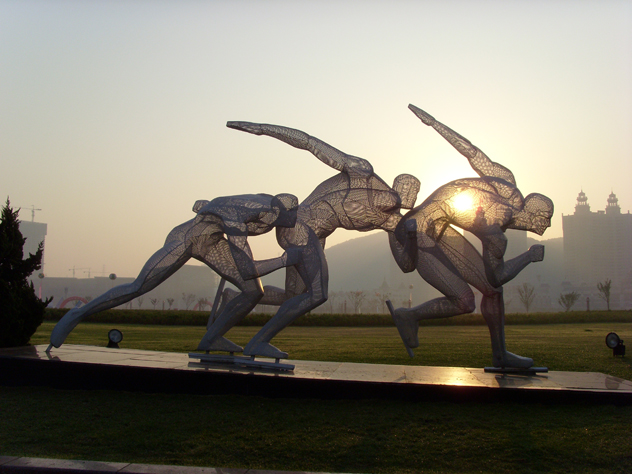
星海广场
总占地面积176万平方米,从中心广场南行，便是"百年城雕"。百年城雕的尽头是打开的书形广场，面对无垠的大海，寓意着百年后的大连又翻开了新的一页。
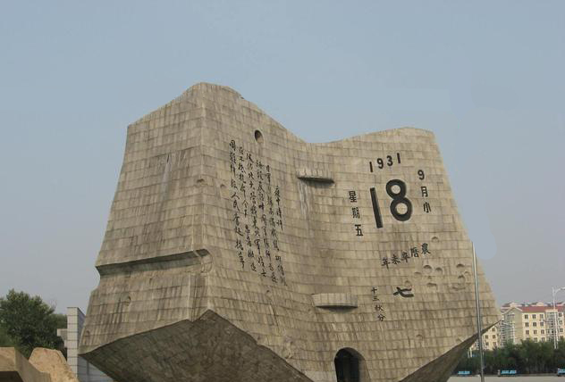
沈阳九一八历史博物馆
馆内收藏的九一八事变爆发前后近1000幅珍贵历史照片文献资料及700余件历史文物，分7个部分，展示了东北人民从沦为亡国奴走向抗战胜利的历史。
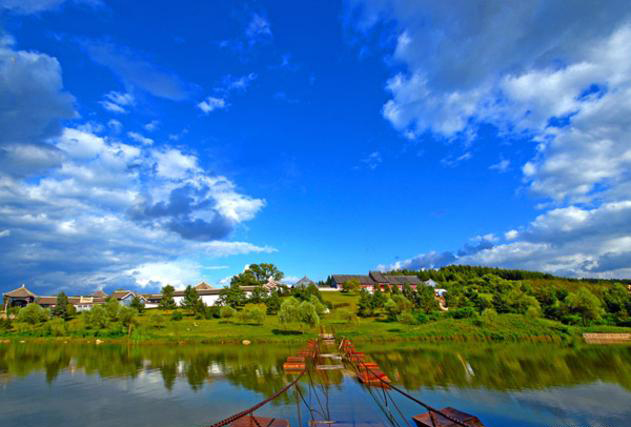
赫图阿拉城
赫图阿拉城是后金的第一都城，公元1616年努尔哈赤在这里登基称汗，后来清太宗皇太极尊赫图阿拉城为“天眷兴京”，赫图阿拉城是满族崛起的地方。
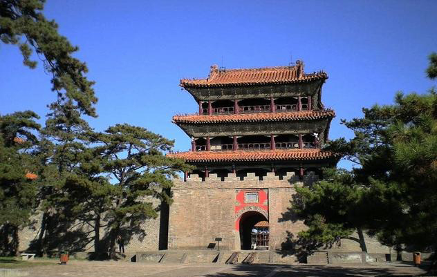
沈阳故宫
是清代的开创者努尔哈赤和皇太极建造使用的宫殿，始建于1625年，共有建筑100余座，300余间，是我国现存仅次于京故宫的最完整的古代帝王宫殿建筑。
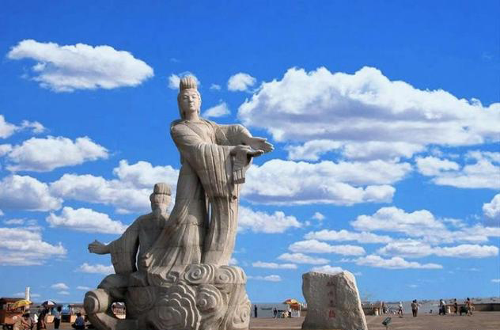
锦州笔架山
笔架山风景区以笔架山岛和“天桥”为主要景点，人曰“天桥”，天桥平坦径直，象一条蛟龙随着潮涨潮落而时隐时现，神奇绝妙，堪称“天下一绝”。
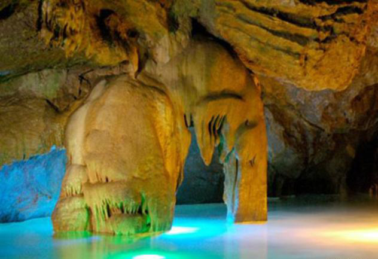
本溪水洞
本溪水洞是数十万年前形成的大型充水溶洞，洞内分水、旱二洞。洞顶和岩壁钟乳石多沿裂隙成群发育，呈现各式物象，不假修凿，自然成趣，宛若龙宫仙境。
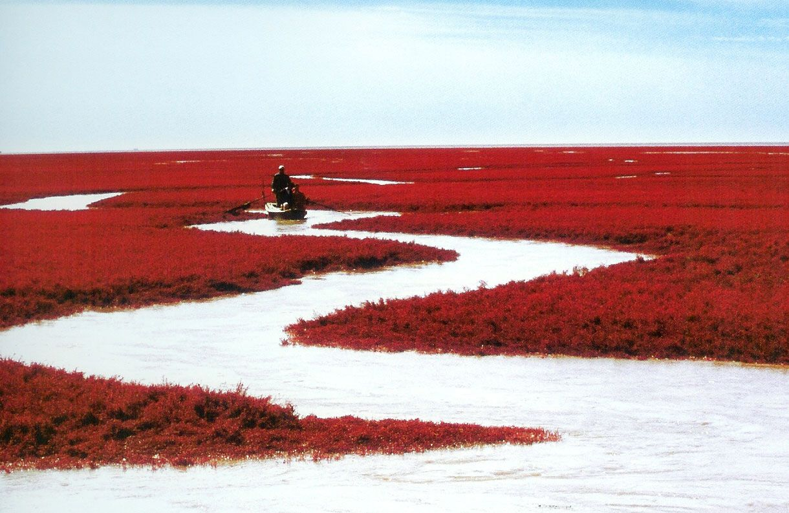
盘锦红海滩
红海滩风景区以全球保存得最完好、规模最大的红海滩湿地资源为依托，成为一处自然环境与人文景观完美结合的纯绿色生态旅游系统。
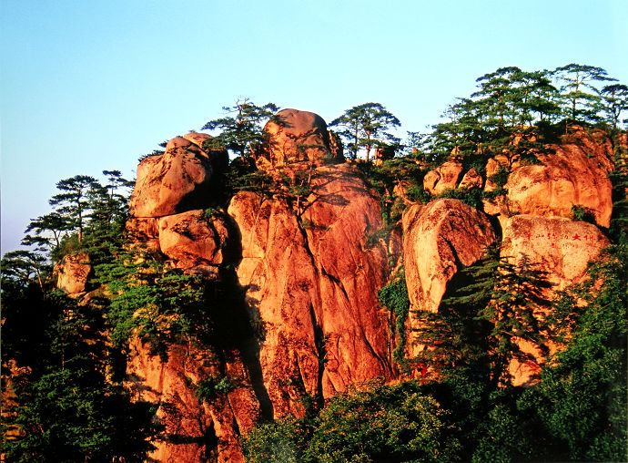
鞍山千山
鞍山千山风景名胜区，南临渤海，北接长白，具有景点密集、步移景异、玲拢剔透的特色，素有“东北明珠”之誉。一直是吸引游人的人间胜境。
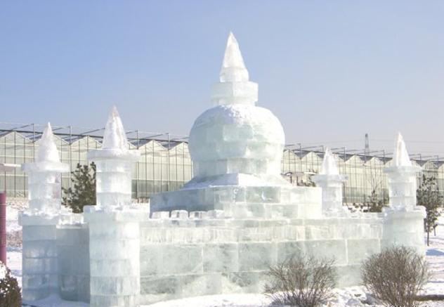
沈阳棋盘山
棋盘山国际风景旅游开发区以春绿、夏翠、秋枫、冬雪而闻名国内外，是沈阳最大的自然风景区。景区内有棋盘山风景区、东陵公园、沈阳世博园、棋盘山冰雪大世界、关东影视城、向阳寺等众多知名旅游区。
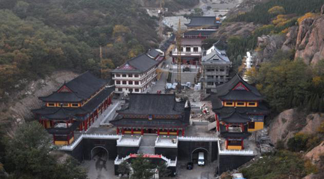
锦州北普陀山
锦州北普陀山是一座群峰险壑逶迤伴绕、飞泉云岫横生妙境的佛山胜地，山中名峰、古刹、摩崖移步即景，尤以“石堂松雪、烽台夕照、红石卧龙、泓池澄晖、滴水观音、苍山观海、枫林旭日”等景观而著称于世。
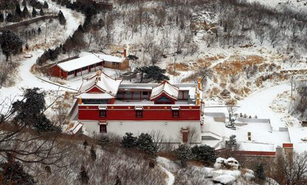
阜新海棠山
海棠山是东北三大名山之一医巫闾山后尾之主峰，山上摩崖造像独物的民间艺术风格、雕功刀法，堪称国内一绝，是中华民族的文化瑰宝，现为辽宁省文物保护单位，每年年吸引着大量的国内外游客游览观光。
丹东凤凰山
凤凰山历史悠久，景色旖旎，集“雄”、“险”、“幽”、“奇”、“秀”于一身，是驰名中外的旅游胜地之一。凤凰山以其“景、峰、险、石、洞、泉、物、庙、刻、迹”等十大景观为主线，四季景色各异，文物古迹比比皆是。
风光图片
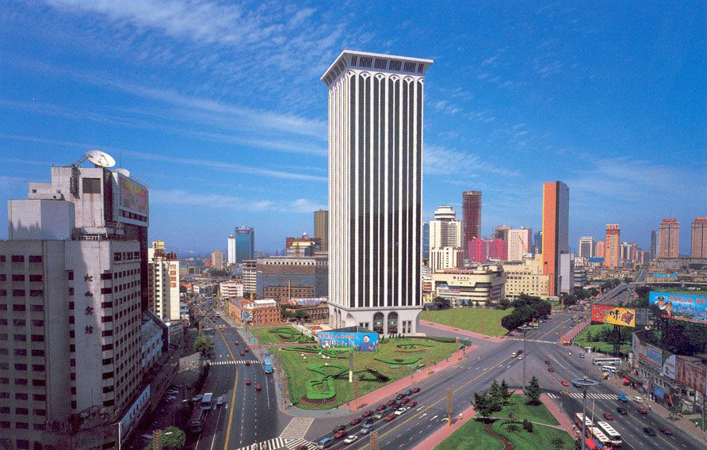
大连城市风景
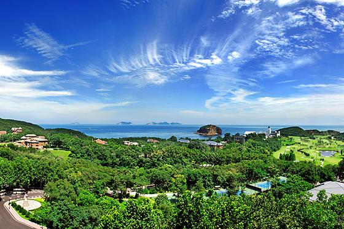
棒棰岛海景
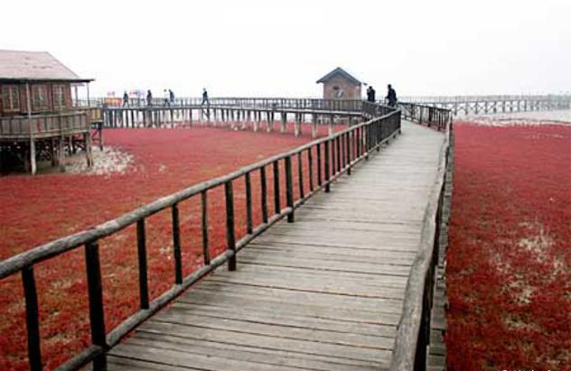
盘锦红海滩
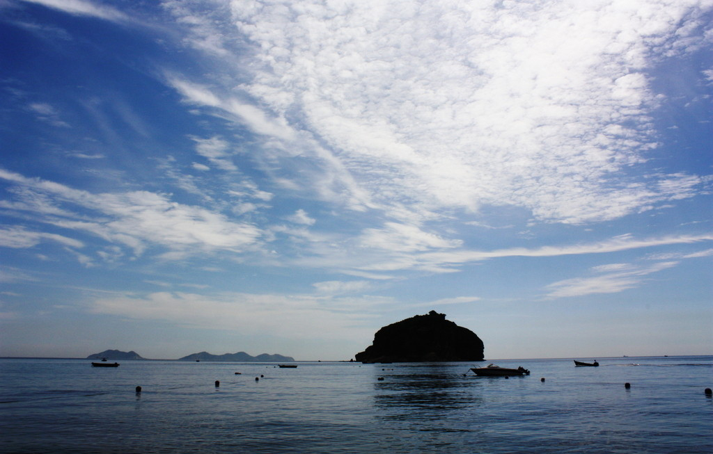
棒棰岛海面
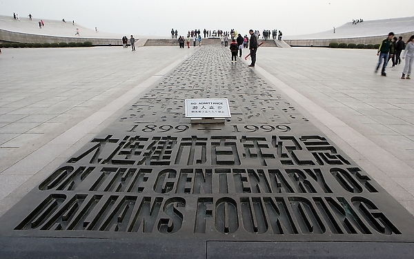
星海广场纪念碑
锦州普陀山
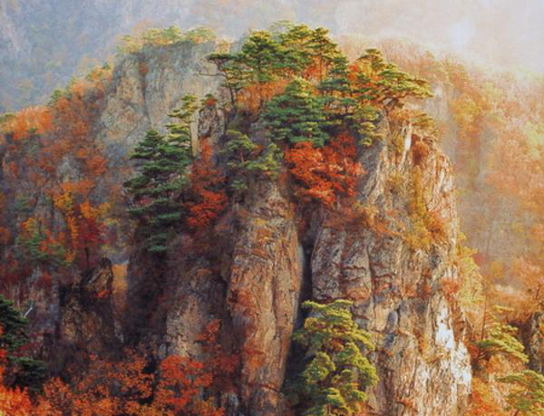
本溪关门山
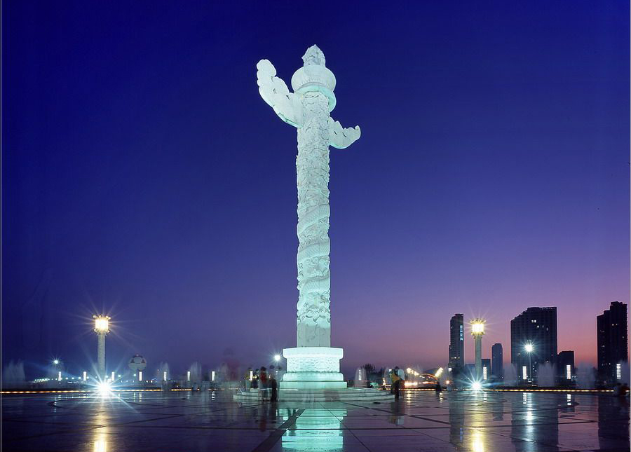
星海广场华表
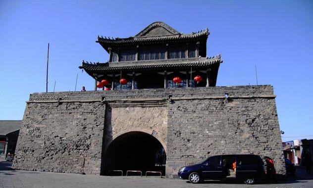
兴城古城
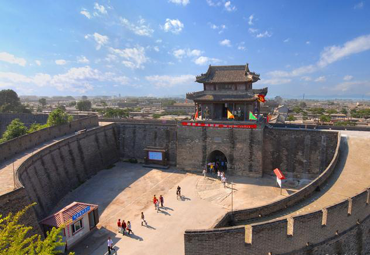
兴城古城
{kind=link}
{kind=link}
{kind=link}
{kind=link}
{kind=link}
{kind=link}
{kind=link}
{kind=link}
{kind=link}
{kind=link}
{kind=link}
{kind=link}
{kind=link}
{kind=link}
{kind=link}
{kind=link}
{kind=link}
{kind=link}
{kind=link}
{kind=link}
{kind=link}
{kind=link}